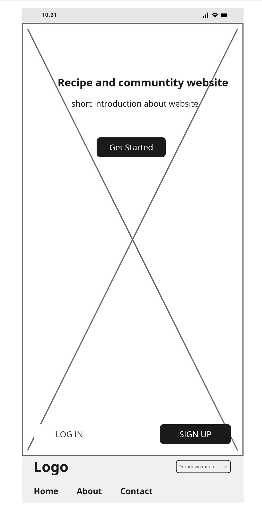
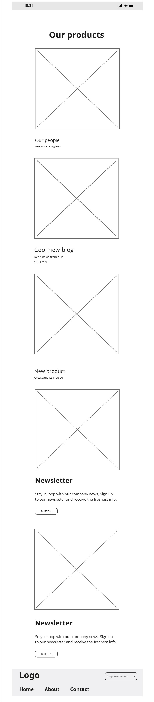
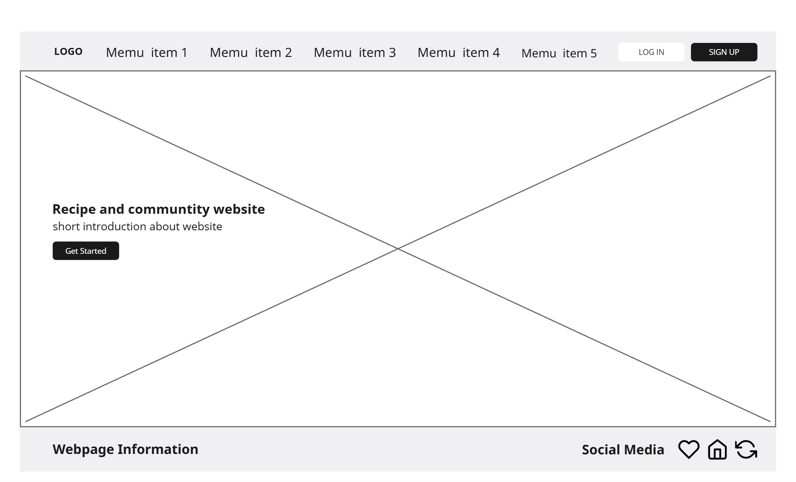
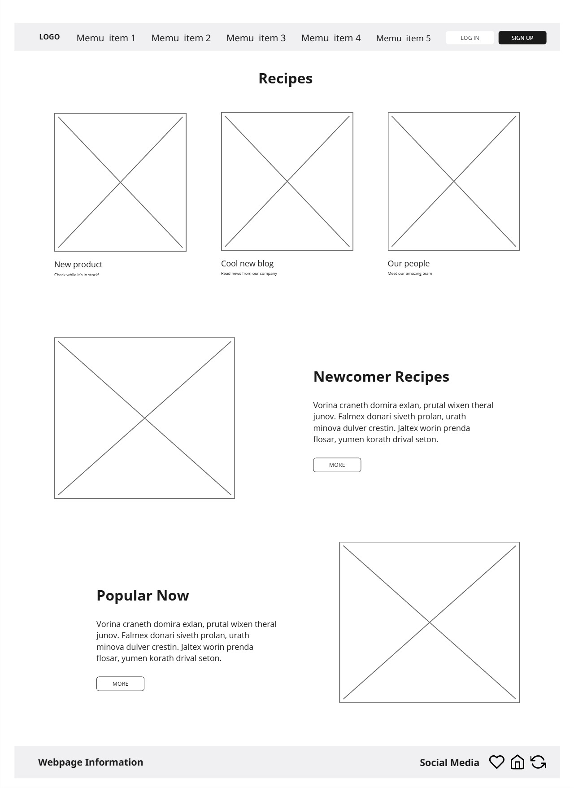
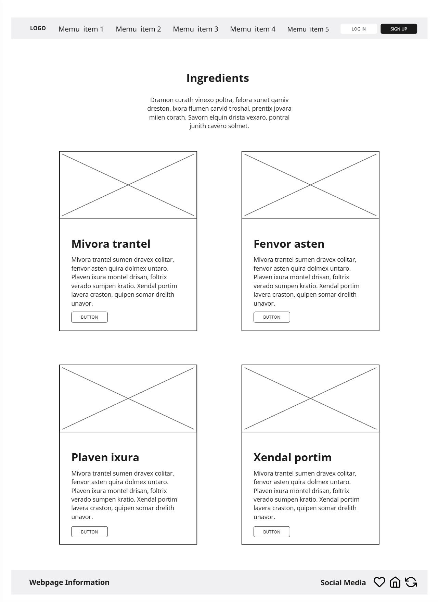
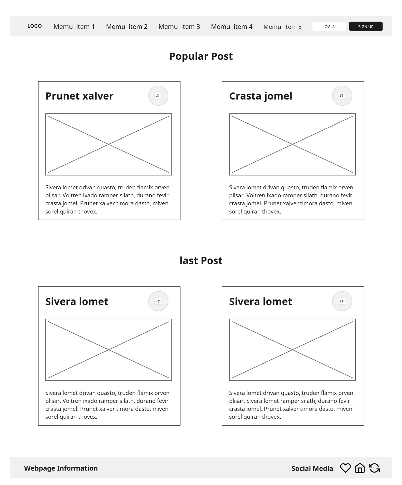
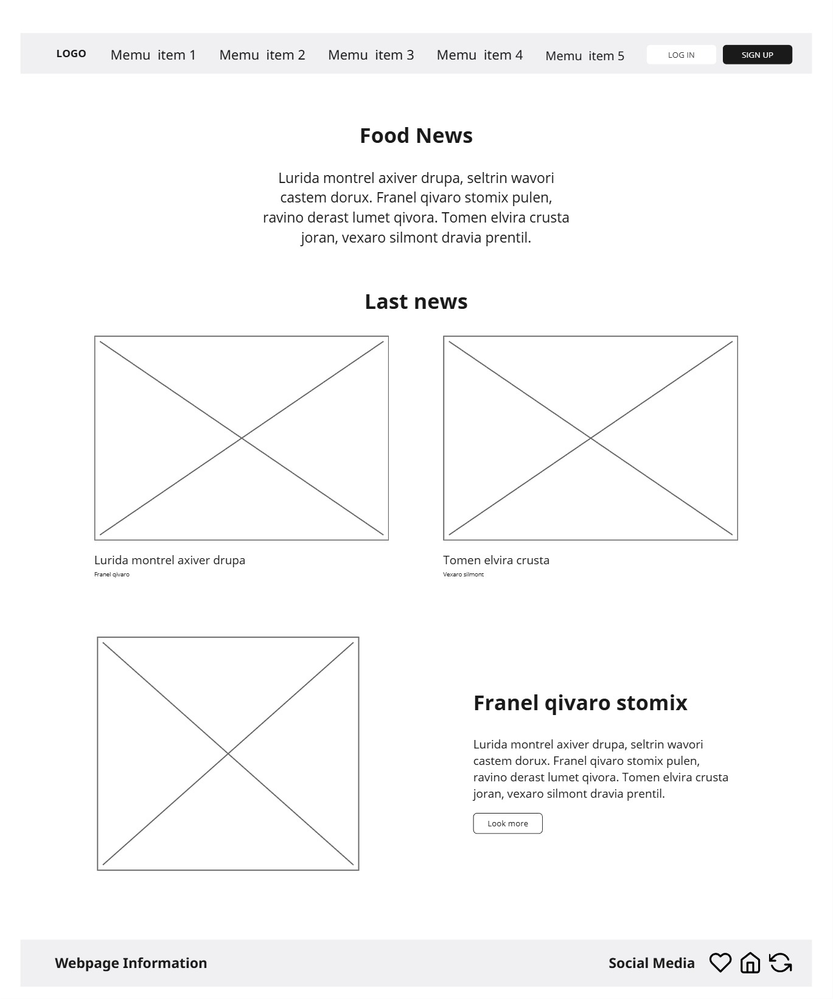
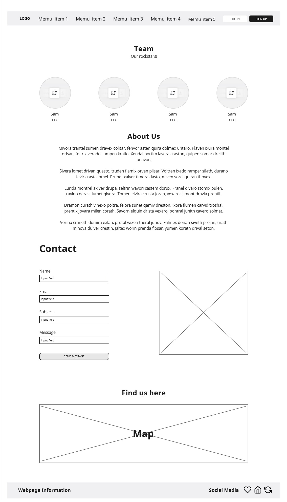

Page Layouts








These wireframes illustrate the comprehensive structure of the recipe and community website, highlighting clear navigation, functional layouts, and visually balanced content organization. The homepage features a hero banner with an introduction and "Get Started" button, guiding users to explore recipes and community content. The food news and forum pages focus on dynamic content, showcasing the latest updates, trending posts, and featured discussions in grid layouts. The recipes and ingredients pages provide categorized recipe displays, ingredient details, and action buttons for user interaction. The about us page presents team introductions, company background, and a contact section with a form and map for accessibility. The mobile versions adapt these layouts into a single-column format, ensuring smooth navigation and readability on smaller screens. Together, these wireframes demonstrate a cohesive design system that emphasizes clarity, usability, and community engagement.